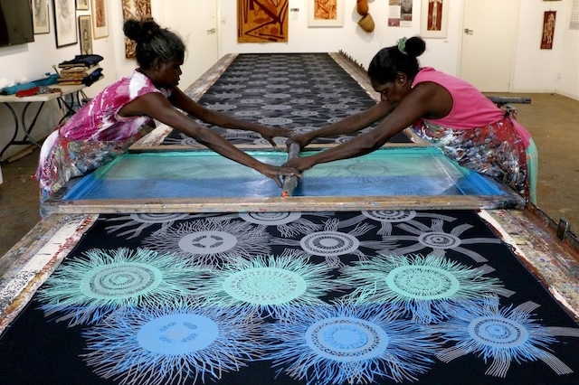

The Indigenous people of Australia or Aboriginals have a long history of using animal and plant fibers to make a variety of fabric. Over the years, their traditional designs and stories have been incorporated into various textiles. The Ernabella Arts Center is a place where local Aboriginals can produce their traditional craft and also learn new techniques to decorate fabric. For the first 30 years, the artists crafted rugs working with wool. These rugs incorporated their own unique designs. However, as they became less economical to produce, the artists were introduced to batik, which is an Indonesian method of dyeing textiles. Batik is quicker than weaving. So many of the Ernabella artists started to produce it themselves. Screen printing was later introduced to the center and Ernabella artists were commissioned to produce fabric for furniture that was to be used at popular tourist destinations such as the National Park offices at Uluru. Screen printing has also been used successfully by the Tiwi people who live on islands north of Darwin. Their company, Tiwi Designs, produces fabric that is inspired by their surroundings. For example, they incorporated bird motifs into their early designs. Tiwi art, culture and language are very different from those of mainland Aboriginal groups. The patterns on their fabric are related to the beliefs and legends in their culture. For example, some textile designs are chosen because they are thought to cause rain. Another successful Aboriginal design company was founded by Jimmy Pyke. His dynamic prints, paintings and fabrics are greatly influenced by the Australian landscape, in particular that of the desert, which is often featured in this work. Pyke worked with acrylic paint, oil pastels and screen printing. Surprisingly, Jimmy Pike's life as an artist began in prison, where he was serving a sentence for murder. The art teachers there recognized his talent and gave him the technical skills he needed to become a successful artist. After Pike's release, he started his own company, aiming to create a product that would sell well commercially but still retain its Aboriginal cultural identity. Eventually, he decided to bring his artwork onto textiles, which were used to produce clothing. The designs he selected were transferred onto cotton and had both a strong linear character and a good color range. Bronwyn Bancroft is one of the most successful Aboriginal artists and designers to date. She has produced a great deal of artwork and textiles and many of her paintings are held by Australian art galleries. Her work reflects her Aboriginal roots, but always with a contemporary, fresh view of family and the natural environment. In 1995, she was chosen by a charity organization to paint a pair of jeans owned by Cathy Freeman, a famous Aboriginal Australian athlete. She used imagery of lizards moving quickly over the Australian terrain and she added a rainbow which represents the optimism that Cathy symbolizes for all Aboriginal people. In 2001, she was chosen to design costumes for the opening of the biggest street parade ever held in Australia. The Journey of a Nation Parade. The people in Bancroft section of the parade all wore an outfit she designed. It featured the image of a snake that had no head or tail to represent an ongoing culture. Exploitation of creative work can be a problem for any artist, and copyright laws exist to protect individual artists from the unauthorized use of his or her work. This issue is often more complex for Aboriginal artists as the symbols and motifs used in their designs also hold cultural significance for them. An example of this was when a businessman had rugs made overseas, incorporating images stolen from Aboriginal paintings. The carpet case, as it became known, was taken to court, where luckily the artist won.